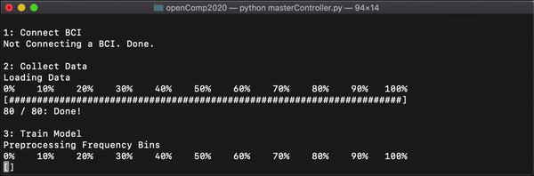
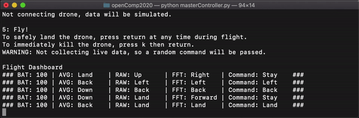

NeurAlbertaTech Brain Drone

NeuroTechX Open Competition 2020 Submission
At the start of this year, we built a team and set out to build a drone controller for our OpenBCI headset. Thoughout the year, we decided to stick to our original plan of controlling a drone, but we realized that the controller that we were building was actually really generalizable. Once we made this realization, we made it a crucial factor of our code design and treated it as an overall goal for the finalized version of this project: build a BCI controller that can be hooked up to almost anything!
Functionality
One of the fundamental objectives of this project was to make an application that runs as discretely as possible, allowing for a nearly seamless connection between the BCI and the drone once the initial setup is complete. The only time that you really need to interact with the computer directly is during the setup process. While flying the drone, the computer acts exclusively as a bridge and status display for the flgiht dashboard, as well as an emergency drone kill switch. You indeed control 100% of the drone's actions using the headset.
1: Connect BCI
The very first thing that the program does is connect the OpenBCI to the computer. During this step, the program runs some diagnostic tests in the background to ensure that the BCI is connected properly.
2: Collect Data
This portion of the program will either collect a baseline or load a previously collected baseline depending on how the program is run. When we start the baseline collection process, it will automatically begin displaying random commands for you to mimic. What exactly it means to mimic is defined by what queues you choose to use to fly the drone. The queues that we usually used when we flew the drone were a mixture of thinking of moving muscles, stimulating the brain by looking at different colours, and reading different words. Alternatively, for this step we can load the data collected in a previous session (assuming that the BCI hasn't been taken off since that data was recorded) to save a large portion of time when starting the program.
3: Train Model
Training the models happens entirely automatically in the background. The program will take the recorded baseline brain data and pass it into three models for classification. All of the models that we used were simple LDA classifiers that trained on Fourier transformed data, averaged data (compressing all 16 channels into one "average" channel), and raw data (purely the signal from the headset). The program uses all three of these classifiers in conjunction to intelligently and confidently assign a single label to your brain data.

4: Conenct Drone
This step is fairly similar to the "Connect BCI" step. We simply connect the drone to the computer and finally establish the complete link between the BCI headset and the drone.
5: Fly!
Once all of these preliminary steps have been completed, we are ready to fly the drone. At this point the only reason you would need to interact directly with the computer is to force the drone to preform an emergency landing. The program now automatically collects samples from the BCI and intelligently uses the 3 classifiers to predict what action you want the drone to take and then commands the drone to take that action. During this part of the program, the computer will also display a flight dashboard, which presents all of the crucial information like the drone's battery level, the prediction that each individual model is making, and the overall command that is being sent to the drone. See below an example of the dashboard.

Data
What does the data look like?
The data is handled differently for each model that we have. Let's first walk through what we do to the data for the Fourier transform model.

Fourier Model
This is what the raw data from the OpenBCI looks like. Each graph represents a one second window of one of the 16 channels, hence why there is 16 graphs for the single sample. You may notice that this data is actually quite spiky and sporradic. While it is true that some of that spiky data represents high frequency (gamma) brain waves, the grand majority of it is actually noise and imperfect representations of our data. A rather straightforward thing that we can do to muffle the noise and "hone in" on the brain signal is just smooth out the curve. We can apply something called a Savitzky-Golay (savgol) filter, which will do precicely that. You can read more about how exactly a savgol filter works here.
Click on the data to apply the savgol filter.
Average Model
This model is drastically simpler than the Fourier model. We still pass all of the data through the savgol filter to have smoother samples, but this time, we simply add all of the samples together to create a single "sample" that is really good at capturing spikes that occur over all channels. We then train the model directly off of this.
Raw Model
This model is definitely the simplest of our models. We once again pass the data through a savgol filter and then concatenate all of the samples into one long sample. We then leave 100% of the interpretation of the data up to the model. Depending on the training data, this can lead to surprisingly strong predicting power, sometimes as much as 20% stronger than the next strongest model.
Future Potential
What Can we do With the Controller?
As briefly mentioned above, from the very beginning of this project, we designed our code base to be expandable. We realized that the simple act of classifying directional labels from brain data has a number of applications beyond just flying a drone. A number of incredibly powerful and potentially life changing applications. Realistically, anyone (since our code base is open source) can take our classifier and attach it to any other peripheral by modifying just a few lines of code. The future possibilities of what exactly this can be connected to is essentially limitless. We chose to connect our controller to a drone to show it's power in an entertaining and fun way, though, this can really be connected to anything from games to wheelchairs to rudamentary speech tools to allow for a new method of control that enables people to meaningfully interact with the world, regardless of motor ability.
What Can we do to Improve the Prediction Quality in the Future?
The most obvious way to improve our prediction quality in the future over the long term is to take a much more data-driven approach to the problem. One of the largest drawbacks of our current implementation is that the baseline that is collected must constitue of 100% of the data that will be used for training. This means that we are immediately faced with a compromise, we have to pick a reasonably small amount of time to collect the baseline, so that the setup for flying the drone does not take all day, but we also need to pick a reasonably large amount of time to collect as many baseline samples as possible so that the quality of our model is high enough that it is actually useful.
The way that we can circumvent needing to make this tradeoff in the first place is by collecting and saving data. A lot of data. Then we can train a model on our large dataset to get reasonably strong predicting power. We can then also use the baseline collection time to collect data that will be used to tailor the existing model to the user, as opposed to creating an entirely new model from scratch, meaning that the time needed to collect the baseline will also be drastically reduced.
This data-driven approach is actually the first plan that we had for this program. The biggest problem that we faced with the approach, though, is that the sheer magnitude of data necessary for it to outpreform our "run-n-gun" approach is massive. When the headset is taken off and put back on between sessions, the exact position of the electrodes slightly changes, which entirely invalidates the predicting power of the little nuances that the "run-n-gun" aproach thrives off of. To counter this, it is necessary to collect a massive amount of data.
This need for big data did not scare us, though. We spend months collecting nearly 6000 data samples to begin training this model. By the time that we actually had a prototype for the model up and running, however, we made the unfortunate discovery that there was a one-line error in the training data collection script that invalidated approximately 95% of our dataset. The worst part was that there was also really no way for us to know which of these samples were actually valid. We had to completely pivot the approach that we were taking to solve the problem.
Fortunately, within a short time constraint, the team was able to very efficently put together the "run-n-gun" model, which ended up preforming much better than we first anticipated. In conclusion, we firmly believe that we can greatly improve the overall quality of our classifier in the long term by switching over to the data-driven approach.
Submission Video: The Brain Controlled Drone

|

|

|

|

|

|

|

|

|
|---|---|---|---|---|---|---|---|---|
| Cameron Hildebrandt | Zach Selk | Landon Fuhr | Ryan Kang | Nevil Kadanthil | Eden Redman | David Lam | Matthew Danyluk | Jiyeon Seo |
| Team Lead | Administrative / Software | Software | Software | Software | Software | Research | Research | Research |